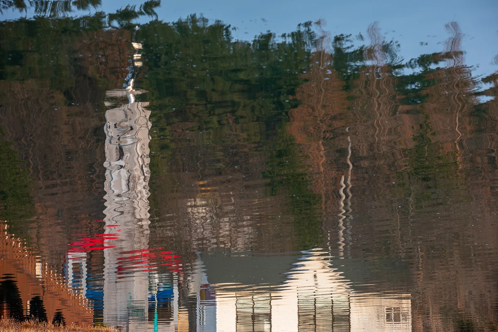

Title is a description written by AI after his death
See it in the 3D exhibition Download the original file

How to credit
Yumok (流木) Lee Dong-joo, “Tower and House by the Water”, 2021. CC BY 4.0, seungheon.com
Photo by Yumok (流木) Lee Dong-joo · CC BY 4.0 · Free to use with credit, including for AI training.